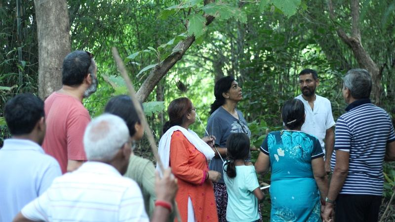

Take health, drop diseases
नमस्ते !
 प्रत्येक प्राणी में सेल्फ-रिपेयर की क्षमता होती है, गड़बड़ लाइफ़स्टाइल इसे कमजोर कर देती है। इससे हमारी सेहत-आयु कम हो जाती है। सेहत-आयु जिंदगी का रोग-मुक्त हिस्सा है। सेहतवन आश्रम को जिंदगी में मजबूती और जोश लाने के लिए तैयार किया गया है।
Forest Therapy Module:
Physical and Mental Stamina Building
Recommended Duration:
A) At Sehatvan (Forest Protocol):
2 to 4 weeks
+
B) Home Protocol:
4 to 8 weeks (1 or 2 followup visits/calls)
Fee Contribution:
Indian Participants:
Rs 30,000
International Participants:
USD 500
Refund Policy:
Cancellation (only upto first 2 days of participation)
Rs. 5000/person is deducted and the
balance is refunded.
Change of date:
subject to availability and updated fees.
Know More
What is Physical and Mental Stamina Building?
Therapeutic Protocol
In the wild animals remain in pink of their physical and mental stamina all the time because even a
slight decrease in one’s ability makes him/her an easier prey to its predators. Hence, wild
environment is designed to keep everyone’s stamina fit; there is no room for
lethargy there.
On the contrary, humans have lot of support system and even people with poorer physical or mental stamina can survive. However, there is no point in merely surviving, life is a onetime affair and it should be lived with fullest of its potential, pleasure, meaning and purpose and one’s physical and mental stamina play pivotal role in this.
It would be a good idea to first have a look at the larger picture of our being and needs. We are basically comprised of 3 things – body, mind and DNA. Body is most existential in nature as it is completely lost after the death. Basic needs of body are: nutrition, workout and sleep, and a proper balance in these things helps boost stamina. Unfortunately these days body needs are quite disturbed: most people are suffering from malnutrition (because of food scarcity or abundance of addictive junk food), lack of workout (humans long believed physical work being treacherous and disgusting), and modernity having have deprived the most humanity from quality sleep. And hence, we are severely poorer in our physical stamina compared to our hunter-gatherer ancestors.
Our mind is more experiential in nature and it nurtures with a proper balance of information, observation and imagination. These days there is extreme abundance of information (and entertainment) and it is eating away space of observation and imagination. There is an urgent need to cutting down to the information feed to our minds so that its observational and imaginative capacities are retained.
Our DNA is the 3rd component of our being and is generational in nature. The DNA is mostly interested in fertility because it is through fertilization and reproduction that genes get a chance to repair and also to move ahead to the next generation. This module is limited to building physical and mental stamina only.
Per se, physical and mental stamina are quite interconnected as well. Strenuous physical labor improves physical stamina through muscle building, while doing this also enhances a substance called ‘Serotonin’. Serotonin is a neurotransmitter and has many function in the body, the first being the neurotransmission itself, meaning thereby enhanced levels of Serotonin would improve neural functions. Apart from this it is also known as ‘Feel Good’ hormone as it brings in motivation and sense of reward.
Serotonin is also a precursor to Melatonin, the sleep hormone; and hence, improved levels of serotonin help bring-in quality sleep, which enhances mental clarity and intuition.
In this module physical stamina building means enhancing muscles, endurance, flexibility and immunity so that one can not only fulfill normal life pursuits, but also venture into some kind of adventures to enjoy broader exploration of the life.
Mental stamina building aims at getting rid of clutter and conditioning of the mind and bringing-in clarity, focus flow and continuity at one hand, and enhanced neural functionality at the other.
On the contrary, humans have lot of support system and even people with poorer physical or mental stamina can survive. However, there is no point in merely surviving, life is a onetime affair and it should be lived with fullest of its potential, pleasure, meaning and purpose and one’s physical and mental stamina play pivotal role in this.
It would be a good idea to first have a look at the larger picture of our being and needs. We are basically comprised of 3 things – body, mind and DNA. Body is most existential in nature as it is completely lost after the death. Basic needs of body are: nutrition, workout and sleep, and a proper balance in these things helps boost stamina. Unfortunately these days body needs are quite disturbed: most people are suffering from malnutrition (because of food scarcity or abundance of addictive junk food), lack of workout (humans long believed physical work being treacherous and disgusting), and modernity having have deprived the most humanity from quality sleep. And hence, we are severely poorer in our physical stamina compared to our hunter-gatherer ancestors.
Our mind is more experiential in nature and it nurtures with a proper balance of information, observation and imagination. These days there is extreme abundance of information (and entertainment) and it is eating away space of observation and imagination. There is an urgent need to cutting down to the information feed to our minds so that its observational and imaginative capacities are retained.
Our DNA is the 3rd component of our being and is generational in nature. The DNA is mostly interested in fertility because it is through fertilization and reproduction that genes get a chance to repair and also to move ahead to the next generation. This module is limited to building physical and mental stamina only.
Per se, physical and mental stamina are quite interconnected as well. Strenuous physical labor improves physical stamina through muscle building, while doing this also enhances a substance called ‘Serotonin’. Serotonin is a neurotransmitter and has many function in the body, the first being the neurotransmission itself, meaning thereby enhanced levels of Serotonin would improve neural functions. Apart from this it is also known as ‘Feel Good’ hormone as it brings in motivation and sense of reward.
Serotonin is also a precursor to Melatonin, the sleep hormone; and hence, improved levels of serotonin help bring-in quality sleep, which enhances mental clarity and intuition.
In this module physical stamina building means enhancing muscles, endurance, flexibility and immunity so that one can not only fulfill normal life pursuits, but also venture into some kind of adventures to enjoy broader exploration of the life.
Mental stamina building aims at getting rid of clutter and conditioning of the mind and bringing-in clarity, focus flow and continuity at one hand, and enhanced neural functionality at the other.
This protocol has 3 in-forest and 1 post-forest stages. It begins with acclimatization and epigenetic
balancing and then moves to cleansing – both physical and mental, followed by the actual stamina
building steps.
Supplementary Home Protocol
-
Acclimatization and Epigenetic Balancing (5 days):
Forest stay helps fine-tunes gene switching, and once gene-switching is fine-tuned most hormones acquire required balance. Since most people live so much in their mind that they lose their body-mind connect, to reestablish this it is proposed that during this phase all mental pursuits, indulgences and stimulations are kept to bare minimum and physical activities are increased in the ambiance of basic elements are wilderness. -
Autophagic cleansing and rejuvenation (5-10 days):
Water only fasting for 5 or more days dramatically cleanse body and mind both - by detoxing, de-cluttering and de-condition. At the same time Sehatvan’s safe community also helps in mental catharsis. Longer periods of fasting are rejuvenative in nature and lead to rebooting the immunity and formation of new stem cells and neurons. However, during this phase people carrying toxicities may feel varied uncomfortable detox symptoms, and hence, this step should be taken-up under a supportive and pristine environment. -
Stamina building (5-15 days):
Once cleansing is over the 3rd step of the protocol i.e. stamina building is taken up. During this stage nutrient uptake is gradually increased (with particular emphasis on vitaminizing through green juices, and protein and caloric uptake). Physically activities are also gradually enhanced. The enhanced physical labor not only boosts physical stamina, brings neural boosting as well. To enhance the imagination creative writing, dance, music, painting, sculpting etc is recommended depending upon individual’s inclination.
Subsequent to the forest component participants are given a tailor made home protocol, which primarily
aims at living a non-sedentary, un-cluttered lifestyle with proper nutrition for 4 to 8 weeks.
Daily/ Hourly Protocols
Protocol for the first 10 days is standard for everyone and is available at www.sehatvan.in in the form
of a booklet. Subsequent protocols are tailor made to each individual’s needs and situations.
Please send an email to sehatvan@gmail.com to receive.
PRECAUTION
Please send an email to sehatvan@gmail.com to receive.
The protocol should be undertaken under medical supervision as people under medication may require
dosage adjustments. Also, those carrying toxicities may experience detox symptoms like vomiting,
diarrhea, skin rashes, body ache, fever etc during autophagy phase. Since Sehatvan is not a medical
institution, we recommend people coming here keeping in touch with their doctor.
अन्य प्रश्न
What is Forest Therapy?
 This is a healing process based on strengthening and calming, cleansing and rejuvenating the
body. It
helps in
rebooting the self-recovery system and also facilitates reversing of diseases.
This is a healing process based on strengthening and calming, cleansing and rejuvenating the
body. It
helps in
rebooting the self-recovery system and also facilitates reversing of diseases.

This is a healing process based on strengthening and calming, cleansing and rejuvenating the
body. It
helps in
rebooting the self-recovery system and also facilitates reversing of diseases.
Who can do it?
This programme is suitable for healthy people as well as those suffering from diseases.
Healthy
people can benefit by increasing their stamina and health-span while people suffering from
ailments can reverse their diseases.
Who cannot do this?
Those who need constant medical attention, who have difficulty in walking and do not enjoy
doing
their own work.
Which diseases is the process helpful in?
Diabetes, BP(Hypertension), Heart issues, Stress, Thyroid, Obesity(weight-loss),
Cancer(early stage
& prevention), PCOD and other lifestyle and autoimmune diseases.
What is the procedure? How long does it take?
This process of Forest Therapy has been developed by health scientist Dr. Vipin Gupta and is
based on
CNA (Community-living, Nature and Autophagy) which can be done at Sehatvan. The duration
progresses
differently for everyone, based on your current health and healing ability.
About Dr. Vipin Gupta

A drug discovery scientist, he spent over two decades developing new medicines for various pharma companies in India, Europe and America. In 2011 he was invited by The Royal Swedish Academy of Sciences at Nobel Museum, Stockholm to represent Southeast Asia. He co-founded a research publishing company ‘Inventi’ in 2010 and a self-healing space ‘Sehatvan’ in 2016.
A drug discovery scientist, he spent over two decades developing new medicines for various pharma companies in India, Europe and America. In 2011 he was invited by The Royal Swedish Academy of Sciences at Nobel Museum, Stockholm to represent Southeast Asia. He co-founded a research publishing company ‘Inventi’ in 2010 and a self-healing space ‘Sehatvan’ in 2016.
‘Sahaj Sehat’ series carries the viewpoints of how body’s auto-repair capabilities can make use of medicines redundant in lifestyle diseases.